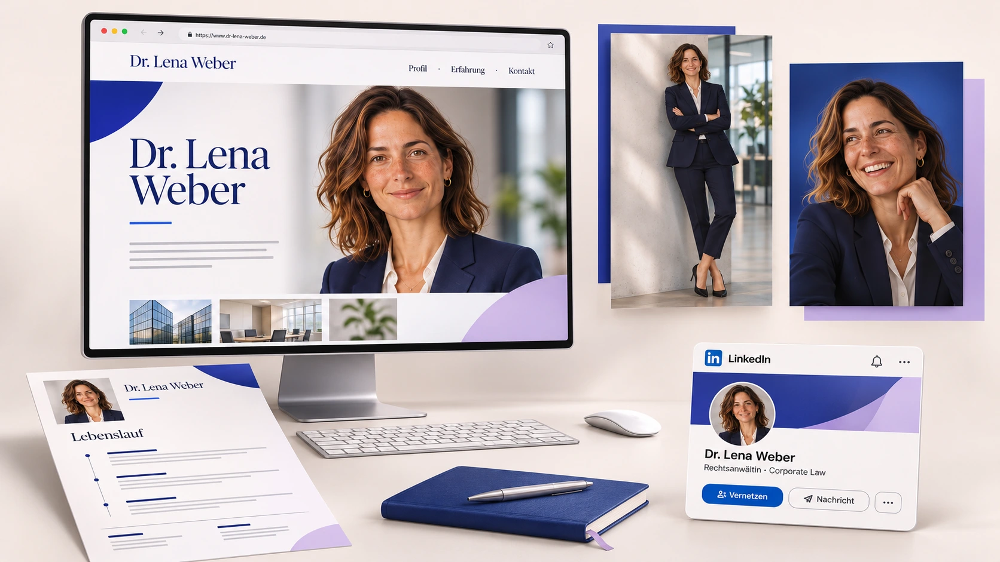

Angebotsvisualisierung: Business- und LinkedIn-Porträts, Portfolio-Website und Lebenslauf als abgestimmter Auftritt.
01 BEWERBUNG & KARRIERE
Bewerbungspaket mit
KI-Assistent erstellen
Business- und LinkedIn-Fotos, Lebenslauf, Portfolio-Website und auf Wunsch ein automatisierter Bewerbungsprozess. Alles auf dein Profil abgestimmt.
Das bekommst du
- Individuelle Businessporträts und optimierter Lebenslauf
- Deine persönliche Portfolio- und Bewerbungswebsite
- Ein Agent für Stellensuche, Profilabgleich und Bewerbungen
- Auf Wunsch automatisierter Versand nach vereinbarten Regeln
Lernen oder abgeben: Du lernst die Werkzeuge selbst zu nutzen — oder gibst die Einrichtung und Umsetzung an mich ab. Zum Beispiel mit ChatGPT oder Hermes Agent, passend zu deinen Anforderungen.
Mein Bewerbungspaket anfragen ↗ANGEBOTSVISUALISIERUNG +
Wir legen Suchkriterien, korrekte Profilangaben und Freigaben gemeinsam fest. Wie weit der Ablauf automatisch laufen kann, hängt von den eingesetzten Tools und den jeweiligen Bewerbungsportalen ab.